在Cocos2d-x v3中使用帧动画
你将会学到以下几点:
- 为何要使用精灵图表
- 在不同的设备和分辨率中设计和运行游戏
- 创建优化的精灵图表
- 创建动画
- 播放角色动画
一句话就是: 一次开发， 到处运行(赚钱)
安装cocos2d-x
以mac上的xcode为例，其他平台可以参考官方文档。
首先从http://www.cocos2d-x.org/download下载cocos2d-x， 本文以3.9为例，除了多边形部分也适用老版本。
解压，然后移动到你需要放置的目录， 打开命令行，切换到此目录, 执行以下命令：
cd cocos2d-x-3.9
python setup.py
安装脚本会根据你的环境提示输入相应的目录; 如果需要开发android程序， 你需要输入android的sdk和ndk的地址，如果只是开发MacOS或者iOS程序， 直接enter略过就行了。
注意：cocos2d-x需要python 2.7，MacOS上已经自带，windows需要自己去python.org下载， 注意下载32位的版本， 64位的cocos2d-x会出现各种问题。
关闭此命令行， 然后再打开， 你会发现已经多了一个命令:cocos, 你可以用它来创建工程。
创建第一个游戏
使用以下命令创建一个空工程：
cocos new -l cpp -d ~/cocos2d-x-games Cocos2dx-SpriteSheetTutorial
注意：如果出现这个错误：
ValueError: unknown local: UTF-8设置下locale变量:
export LC_ALL=en_US.UTF-8 export LANG=en_US.UTF-8然后重新运行创建的命令。
该命令会新建一个cocos2d-x工程，位于~/cocos2d-x-games下的子目录Cocos2dx-SpriteSheetTutorial中。
该工程是c++， 你也可以创建lua和javascript工程， 本教程以c++为例。
Cocos2dx-SpriteSheetTutorial下面有一些列以proj.开头的目录， 这些目录对应不同的开发环境，包括Visual Studio，XCode, 已经一些其他平台。
选择你最喜欢的来开发就好了， 当需要支持其他平台的时候， 随时都可以在其他平台编译运行。
开发的时候，最重要的事情就是避免使用平台相关的特殊代码和库， cocos2d-x底层已经为我们做好了跨平台。
这篇教程主要是针对mac下的xcode来写的， 你可以很简单的按照教程在其他平台上做，主要就是加入文件和打开模拟器稍微有点不同。
打开工程， 编译运行， 你会看到一个显示着hello world的程序。
该程序包含了两个类：AppDelegate和HelloWorldScene
为何要使用精灵图表
如果你想在游戏中使用不同的精灵和动画，笨方法就是把它们全部添加到工程， 然后循环加载。
这个方法有几个问题：
- 加载每个文件都需要耗费时间
- 每个精灵都需要单独的加载到显存中
- 切换纹理代价很大
- 精灵无法优化，减少不必要的绘制
来看下面的精灵， 这是个角色走动的动画，下面章节要用到它。精灵图片中的空白区域是为了对其动画相位。
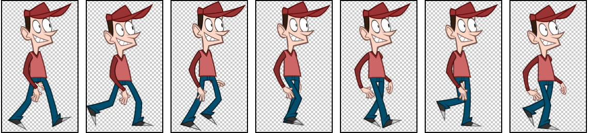
透明区域似乎不包含任何有用的信息，但是GPU却不关心这一点。它会逐像素的进行渲染，不管是否可见。如上图透明区域达到了68%。
最简单的方法就是缩减绘制区域，让它只包含非透明区域，防止GPU对透明区域的绘制。这种方法可以减少24%的透明区域。
更好的方法就是用多边形标识出非透明区域。
好消息是： 当你使用TexturePacker的时候， 不需要关心这些，它会自动为精灵裁剪出cocos2d-x可以读取识别的矩形和多边形区域。
多分辨率设计
cocos2d-x是一个具有高度的可移植性的游戏框架，它已经对不同设备的支持做了很多工作，同样的代码可以运行在所有平台。
但是你需要关心设计问题，有些设备(比如iPad)的宽高比是4:3, 有些是16:9， 还有一些介于他们之间的奇葩比例。
手机统计
新发布的手机都有很高的分辨率，但是还是有很多老手机存在。下面图标展示了截止到2015底手机和平板的屏幕分辨率统计，有将近69%的设备的分辨率等于或者低于1280 x 720.
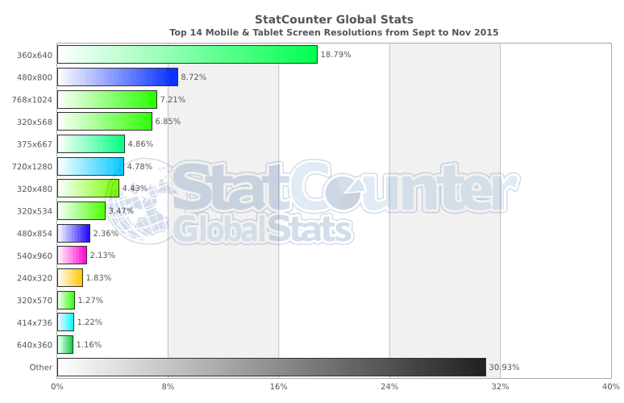
新机和平板都具有很高分辨率甚至全高清的分辨率，但是只占了30%.
| Model | Resolution | Aspect Ratio |
|---|---|---|
| iPhone 6s | 1334 x 750 | 16:9 |
| iPhone 6s Plus | 2208 x 1242 | 16:9 |
| HTC One M8 | 1920 x 1080 | 16:9 |
| Samsung Galaxy S6 | 2560 x 1440 | 16:9 |
| Sony Xperia Z3 | 1920 x 1080 | 16:9 |
| iPad (retina) | 2048 x 1536 | 4:3 |
| Microsoft Surface Pro 4 | 2736 x 1824 | 3:2 |
| Amazon Kindle Fire HD 7 | 1280 x 800 | 16:10 |
设计的两个难点
两个难点：不同的分辨率和不同的屏幕宽高比。
不同的分辨率
不同的分辨率其实并不算是问题，只要你的游戏不包含太多复杂的对象和小的字体。你可以使用高分辨率来设计游戏， 然后通过缩放来适配小分辨率的设备。
对于低性能的小分辨率设备，内存可能是个问题。对于这种设备比较好的方法就是为他们加载缩放版本的精灵图表。一个2048x2048分辨率真色彩精灵需要16M内存，如果缩放50%就只有4M了。
TexturePacker可以快速创建各种缩放版本的精灵图表。
不同的宽高比
不同的宽高比是个棘手的问题，因为他会影响游戏的运行效果。有3中处理方法：
- 为4:3和16:9分别设计一套UI
- 以16:9或者4:3来设计，然后加上黑边
- 以16:9来设计，通过缩放来填充适配4:3
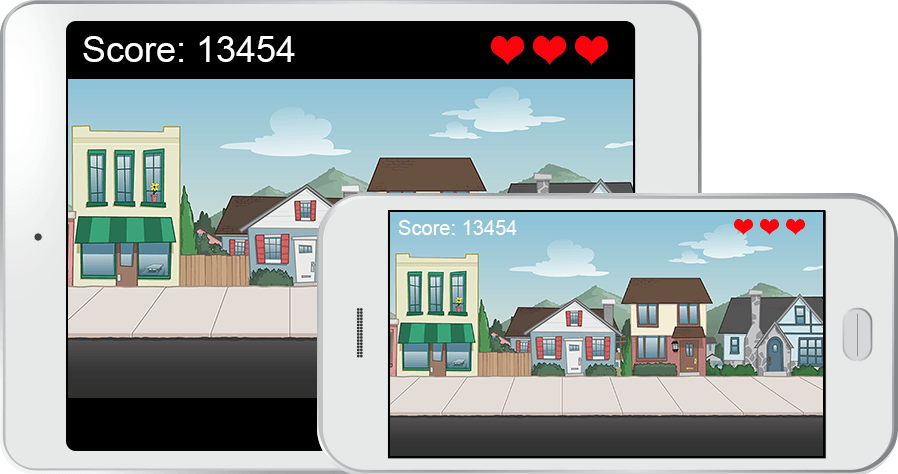
使用黑边， 分数显示在外面
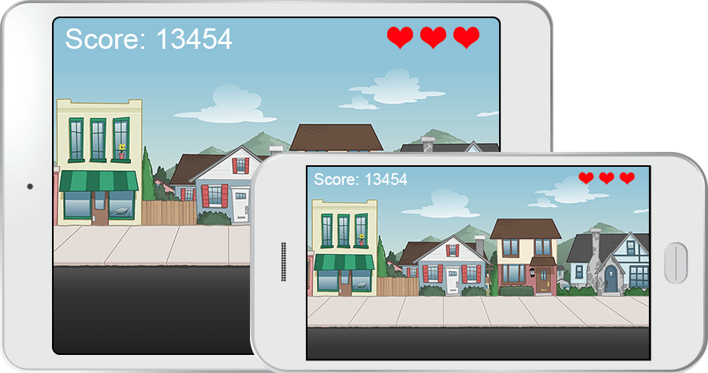
缩放场景
第一种方法可能是最好的，但是会增加大量的工作， 并且会影响到游戏展现，带来更大的挑战。
第二种看起来有点像90年代的设计。
我比较推荐第三种，它给玩家一致的体验。本教程的资源是为4:3宽高比做的，但是内容主要是针对16:9。
使用TexturePacker来创建精灵图表
首先从这里下载安装：https://www.codeandweb.com/texturepacker/download
拖拽cityscene文件夹到左侧面板，TexturePacker会添加包含的精灵到表中，并且保持文件的结构。当添加或者删除精灵图片是也会自动更新精灵表。
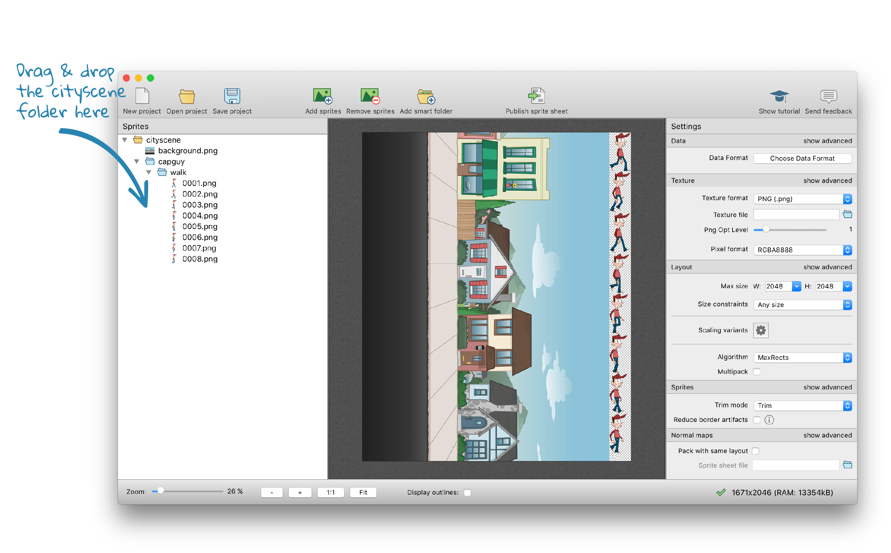
Data Format选择cocos2d-x, 不要选择cocos2d,cocos2d不支持多边形打包。
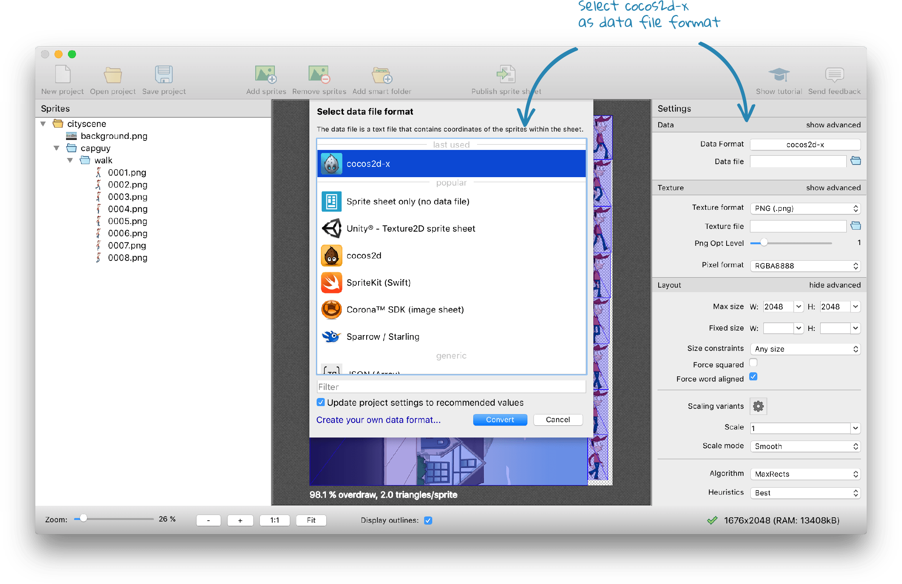
开启多边形支持:Trim mode选择polygon, 你可以通过调节Tracer tolerance来控制精灵的多边形顶点数量，越多的顶点就可以越精确的标识非空白区域，减少绘制量， 但是尽量别控制顶点的数量， 以为顶点的计算需要消耗CPU的资源。
因为背景图片是个非透明矩形，所以这个精灵表过度绘制依然达到了95%。
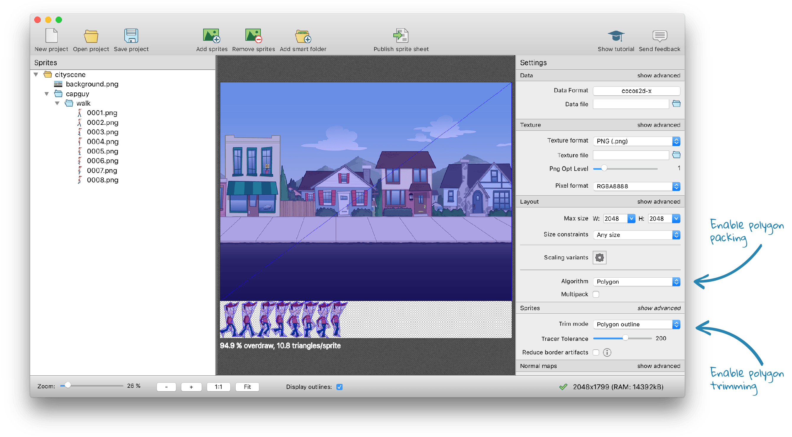
为不同的分辨率设备添加缩放比例，右边面板点击Scaling variants选择cocos2d-x HDR/HD/SD，点击Apply，你会看到三个缩放比例:/HDR/不缩放，/HD/缩放比例 0.5 和/SD/缩放比例0.25。如果你不是你想要的， 你可以删除它们，点击Close返回精灵表。
你会看到3个tab标签，点击标签可以预览相应缩放比例的精灵表。
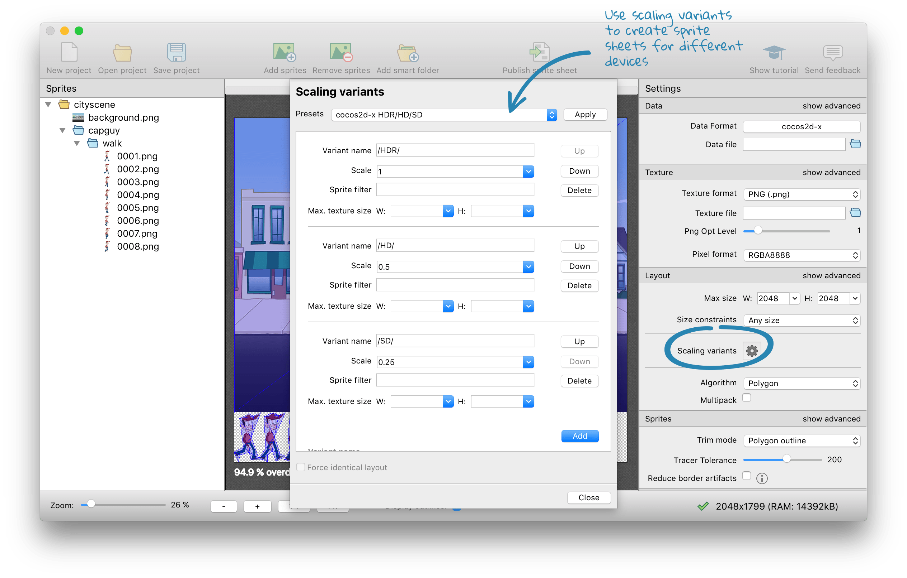
点击Data file后面的文件夹图标，将文件命名cityscene.png， 并保存在你工程下面的res目录中。你会得到一个错误，提示你需要在文件名中包含一个占位符{v}。 将文件名从.../res/cityscene.plist改为.../res/{v}/cityscene.plist。当保存文件的时候，这里的占位符会被替换成缩放比例的名字。
点击工具栏中的Publish sprite sheet，你将会在工程中看到6个文件：
- res
- HDR
- cityscene.plist
- cityscene.png
- HD
- cityscene.plist
- cityscene.png
- SD
- cityscene.plist
- cityscene.png
- HDR
AppDelegate中的启动代码
现在让我们开始写点代码吧。在开始使用精灵图表前，我们先来做点基础工作。如果AppDelegate中代码处理的好的话，可以让你游戏和分辨率保持解耦。
启动和分辨率处理
用以下代码替换AppDelegate.h中的代码:
#ifndef _APP_DELEGATE_H_
#define _APP_DELEGATE_H_
#include "cocos2d.h"
class AppDelegate : private cocos2d::Application
{
public:
virtual void initGLContextAttrs();
virtual bool applicationDidFinishLaunching();
virtual void applicationDidEnterBackground();
virtual void applicationWillEnterForeground();
private:
void initOpenGL();
void initMultiResolution();
void initDirector();
void createAndRunScene();
};
#endif
程序会在不同的时机调用这些public虚函数，你需要实现定义在ApplicationProtocol中的纯虚函数。这里的private函数帮助我们更好的组织整个过程。
删除并用以下代码替换AppDelegate.cpp中的内容：
#include "AppDelegate.h"
#include "HelloWorldScene.h"
USING_NS_CC;
static cocos2d::Size designResolutionSize = cocos2d::Size(2048, 1536);
static cocos2d::Size smallResolutionSize = cocos2d::Size(512, 384);
static cocos2d::Size mediumResolutionSize = cocos2d::Size(1024, 768);
static cocos2d::Size largeResolutionSize = cocos2d::Size(2048, 1536);
designResolutionSize表示游戏的设计大小。你可以根据自己的需要随意设置它，不过业界用的比较多的下面两个值：
- (512, 384): 在低分辨率设备中1单元对应1像素
- (2048x1536): 在你的设计中1单元对应1像素
在cocos2d-x中想做到像素级别的完美设计很困难，最简单的原因，如果你想在Android设备上运行游戏， 你就需要面对大量的不同分辨率设备，就连iOS的设备大小和比例也都不同。
我个人比较建议使用高分辨率作为designResolutionSize, 因为这样能更容易的在图形编辑器中权衡和设置大小和位置。 但是如果一个对象放置的坐标位置不能被4整除，可能会低分辨率设备上有点误差。但是考虑到缩放，其实并不是个大问题。
smallResolutionSize,mediumResolutionSizeandlargeResolutionSize这3个值表示不同屏幕的设备提供的缩放的设计尺寸。他们会对应TexturePacker打包成的缩放版的精灵表。
添加下面的函数， 它负责加载缩放版本的图片资源。
void AppDelegate::initMultiResolution()
{
auto director = Director::getInstance();
auto glview = director->getOpenGLView();
glview->setDesignResolutionSize(
designResolutionSize.width,
designResolutionSize.height,
ResolutionPolicy::NO_BORDER
);
...
setDesignResolutionSize用来设置游戏的设计尺寸，ResolutionPolicy::NO_BORDER表示场景会被拉升填满整个屏幕， 该参数还有几个值可以选择：
| 值 | 描述 |
|---|---|
| EXACT_FIT | 拉升填充整个屏幕，但不是宽高等比拉升，某些情况整个画面是扭曲变形的。 |
| NO_BORDER | 等比拉升，填满整个屏幕，可能超出屏幕外，有些部分不可见 |
| SHOW_ALL | 等比拉升，但是不会超出屏幕外，如果比例不一样，就用黑边填充两边的空白区域 |
| FIXED_HEIGHT | 以高为准，宽进行缩放适配 |
| FIXED_WIDTH | 以宽为准，高进行缩放适配 |
实际使用中EXACT_FIT基本上都不会采用，NO_BORDER可能是最简单的方法了。
继续补充initMultiResolution()函数：
...
std::vector<std::string> searchPaths;
float scaleFactor = 1.0f;
Size frameSize = glview->getFrameSize();
if (frameSize.height > mediumResolutionSize.height)
{
searchPaths.push_back("res/HDR");
scaleFactor = largeResolutionSize.height/designResolutionSize.height;
}
else if (frameSize.height > smallResolutionSize.height)
{
searchPaths.push_back("res/HD");
scaleFactor = mediumResolutionSize.height/designResolutionSize.height;
}
else
{
searchPaths.push_back("res/SD");
scaleFactor = smallResolutionSize.height/designResolutionSize.height;
}
director->setContentScaleFactor(scaleFactor);
FileUtils::getInstance()->setSearchPaths(searchPaths);
}
getFrameSize()可以得到设备的显示尺寸，与预设的几种尺寸的高度进行比较来选择尽量高分辨率的设计方案。
| 高 | 精灵表 |
|---|---|
| h < 512 | SD |
| 513 < h < 1024 | HD |
| h > 1024 | HDR |
代码还设置了资源的搜索路径，这样的好处是不需要硬编码，只要指定加载cityscene.plist, cocos2d-x 就会为我们加载正确的文件。
还有一些模板代码，我们直接复制就行了，比如用来创建OpenGL view的。
AppDelegate添加更多代码
下面的一坨代码也必须要添加进去，用来响应游戏进入前台/切入后台。
void AppDelegate::initOpenGL()
{
auto director = Director::getInstance();
auto glview = director->getOpenGLView();
if(!glview)
{
#if (CC_TARGET_PLATFORM == CC_PLATFORM_WIN32) ||
(CC_TARGET_PLATFORM == CC_PLATFORM_MAC) ||
(CC_TARGET_PLATFORM == CC_PLATFORM_LINUX)
glview = GLViewImpl::createWithRect("Cocos2dx-SpriteSheetTutorial",
Rect(0, 0, designResolutionSize.width, designResolutionSize.height));
#else
glview = GLViewImpl::create("Cocos2dx-SpriteSheetTutorial");
#endif
director->setOpenGLView(glview);
}
}
下面代码用来初始化Director, 设置刷新帧率，开启右下角显示帧率等统计信息。
void AppDelegate::initDirector()
{
auto director = Director::getInstance();
director->setAnimationInterval(1.0 / 60);
director->setDisplayStats(true);
}
下面代码创建并运行游戏场景，下面还需要为场景创建HelloWorld层。
void AppDelegate::createAndRunScene()
{
auto scene = HelloWorld::createScene();
Director::getInstance()->runWithScene(scene);
}
下面方法会在cocos2d-x初始化完成后调用前面创建的所有方法。
bool AppDelegate::applicationDidFinishLaunching()
{
initOpenGL();
initDirector();
initMultiResolution();
createAndRunScene();
return true;
}
下面的两个函数会在你切入后台或者进入前台的时候调用。可以暂停所有动画和音效，也可以停止一些运算等等。
void AppDelegate::applicationDidEnterBackground()
{
Director::getInstance()->stopAnimation();
// SimpleAudioEngine::getInstance()->pauseBackgroundMusic();
}
void AppDelegate::applicationWillEnterForeground()
{
Director::getInstance()->startAnimation();
// SimpleAudioEngine::getInstance()->resumeBackgroundMusic();
}
最后一个需要的函数是initGLContextAttrs(), 它用来设置一些OpenGL绘制时的上下文环境。如果没有特殊的需求， 最好别修改它。
void AppDelegate::initGLContextAttrs()
{
//set OpenGL context attributions,now can only set six attributions:
//red,green,blue,alpha,depth,stencil
GLContextAttrs glContextAttrs = {8, 8, 8, 8, 24, 8};
GLView::setGLContextAttrs(glContextAttrs);
}
使用精灵图表
After the less interesting tasks of initializing the app you’ll now get the 精灵图表 to work. 经过一些初始化工作， 现在可以使用精灵图表了。
在HelloWorldScene.h中添加以下代码：
#ifndef __HELLOWORLD_SCENE_H__
#define __HELLOWORLD_SCENE_H__
#include "cocos2d.h"
class HelloWorld : public cocos2d::Layer
{
public:
static cocos2d::Scene* createScene();
virtual bool init();
CREATE_FUNC(HelloWorld);
private:
cocos2d::Vector getAnimation(const char *format, int count);
};
#endif
这里包含了是个函数声明：
createScene()
用来创建一个包含HelloWorld层的场景。场景类似一个容器，包含了众多的层以及游戏数据。它会在AppDelegate::createAndRunScene中的runWithScene()被Director使用。
init()
Init用来初始化HelloWorld对象，并创建游戏对象和动画。
CREATE_FUNC(HelloWorld)
CREATE_FUNC是一个宏， 创建了一个静态方法HelloWorld::create(), 这个方法会创建一个HelloWorld对象，进行内存管理， 然后调用init()。
getAnimation()
此方法封装了从精灵表创建动画。
下面来看看HelloWorldScene.cpp。
#include "HelloWorldScene.h"
USING_NS_CC;
Scene* HelloWorld::createScene()
{
auto scene = Scene::create();
auto layer = HelloWorld::create();
scene->addChild(layer);
return scene;
}
如上所述：此方法封装了场景的创建，添加HelloWorld层，然后返回场景给Director使用。
添加静态背景
不用使用 SpriteBatchNode 。
在
Cocos2d-x V2中一般会使用CCSpriteBatchNode来提高精灵表的性能，为了兼容，此方法在Cocos2d-x V3中也存在，叫做SpriteBatchNode, 但hi已经被标记为废弃。
Cocos2d-x V3中会自动进行批处理，不需要显示调用。多边形的精灵会被分割成小块，因为批处理只支持矩形。
下一个函数是init():
bool HelloWorld::init()
{
if ( !Layer::init() )
{
return false;
}
SpriteFrameCache::getInstance()->addSpriteFramesWithFile("cityscene.plist");
Vec2 origin = Director::getInstance()->getVisibleOrigin();
Vec2 visibleSize = Director::getInstance()->getVisibleSize();
// background
auto background = Sprite::createWithSpriteFrameName("background.png");
background->setPosition(origin.x + visibleSize.x / 2,origin.y + visibleSize.y/2);
this->addChild(background);
return true;
}
首先调用父类初始化。
使用前你需要先加载精灵表，你可以使用addSpriteFramesWithFile来加载plist文件，plist文件中包含了精灵表信息，cocos2d-x会被自动加载。
注意这里并没有分辨率相关的处理，AppDelegate中的代码保证了addSpriteFramesWithFile会加载对应的资源。
下面两行返回了屏幕原点和尺寸，这些坐标是依据设计尺寸的值。下面可以使用这两个值来让背景居中显示。
调用Sprite::createWithSpriteFrameName()来创建精灵，参数是加载到TexturePacker中是使用的名字。
设置背景居中， 在4:3设备中你会看到更多的天空和街道，而在16:9的设备中是居中的。
最后一行将背景对象添加到层中。
编译运行， 你会看到如下场景：
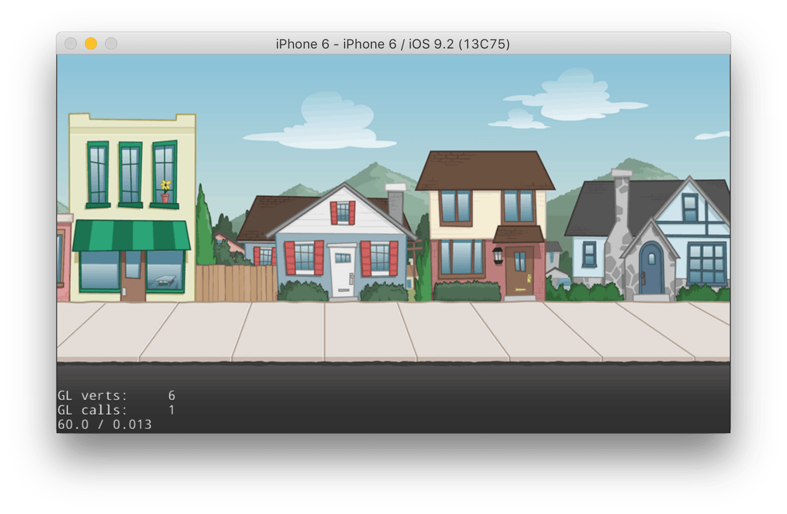
播放动画
cocos2d-x中你需要告诉她使用哪些精灵帧来播放动画。最简单的方法就是使用下面的函数，他返回精灵帧组成的数组：
Vector HelloWorld::getAnimation(const char *format, int count)
{
auto spritecache = SpriteFrameCache::getInstance();
Vector animFrames;
char str[100];
for(int i = 1; i <= count; i++)
{
sprintf(str, format, i);
animFrames.pushBack(spritecache->getSpriteFrameByName(str));
}
return animFrames;
}
这个函数以给定的格式从精灵表中检索精灵帧，你可以这样调用：
Vector frames = getAnimation("capguy/walk/%04d.png", 8);
%04d格式字符串会生成一0填充的4个数字前缀的字符串：0001, 0002, 0003,…
调用此函数会返回8个精灵帧的数组：capguy/walk/0001.png,… capguy/walk/0008.png
在HelloWorldScene.cpp中的init()返回前添加添加以下代码：
// sprite
auto frames = getAnimation("capguy/walk/%04d.png", 8);
auto sprite = Sprite::createWithSpriteFrame(frames.front());
background->addChild(sprite);
sprite->setPosition(100,620);
auto animation = Animation::createWithSpriteFrames(frames, 1.0f/8);
sprite->runAction(RepeatForever::create(Animate::create(animation)));
第一行就是获取精灵帧数组，然后用第一帧创建一个精灵。
将精灵作为子节点加到背景中，这里不是作为场景的子节点。确保将精灵添加到背景上正确的位置。
第二块代码用精灵帧创建了动画，并设置帧率为1.0f/8， 一秒播放8帧。 注意这里是1.0f/8而不是1/8，后者会是一个整型，这里就是0，动画永远都不会被运行。
最后一行组合了3个函数的调用：
- 创建一个动画对象，用来播放动画
- 创建一个
RepeatForever循环播放动画 - 将
RepeatForever对象传递给精灵执行
编译运行，你会看到一个Capguy在原地行走。
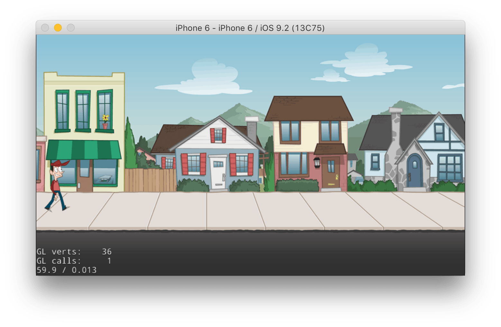
让精灵移动起来
我们来让Capguy从左往右走起来，cocos2d-x可以使用一个MoveTo的动作。它有两个参数: 持续时间(秒)和目标位置坐标。
在HelloWorldScene.cpp中的init()返回前添加添加以下代码：
auto movement = MoveTo::create(10, Vec2(2148,620));
auto resetPosition = MoveTo::create(0, Vec2(-150,620));
auto sequence = Sequence::create(movement, resetPosition, NULL);
sprite->runAction(RepeatForever::create(sequence));
resetPosition重置Capguy的位置成屏幕最左边, 时间为0会立马完成动作。
Sequence创建了一个动作序列， 会一个接一个的执行， 你可以同时添加几个动作， 但是要保证以NULL结尾。
最后，将动作使用RepeatForever包裹传递给精灵执行。
编译运行， 你会看到Capguy在街上散步。
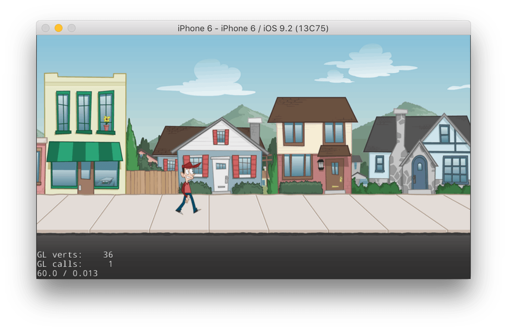